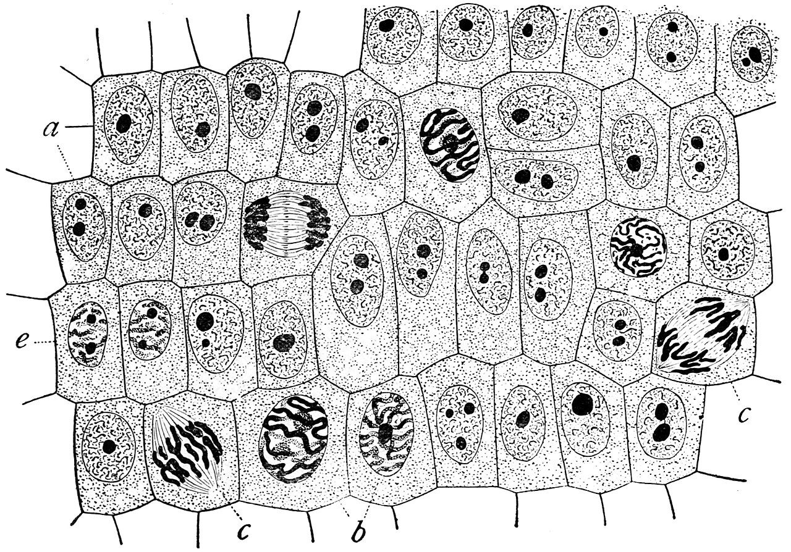

Photosynthesis: 6CO2 + 6H2O + light -> C6H12O6 + 6O2 Cellular respiration: C6H12O6 + 6O2 -> 6CO2 + 6H2O + ATP Photosynthesis stores energy; respiration releases it Glycolysis occurs in the cytoplasm Krebs cycle in the mitochondrial matrix